nasu guide
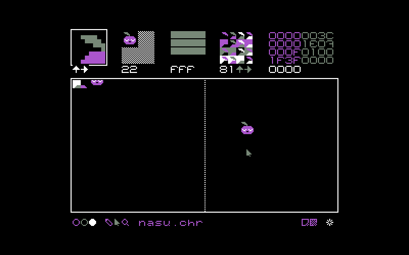- Setup
- Controls
- Uxn Controls
- Renaming a file
- Saving a file
- Importing a file
- New file
- Name table
- Sprite sheet
- Blend view
- Pre-view
- Color view
- Zoom view
- Data view
- Color tool
- Select tool
- Pencil tool
- Zoom tool
Getting Started
Nasu is distributed as a rom for the Uxn system, you must have an emulator available for your machine, for more details, see the Uxn Guide.
To begin, navigate to the folder in which you want your project files to be saved, and enter the following to launch the nasu.rom:
./path/to/uxnemu ~/roms/nasu.rom
Controls
- ← ↑ → ↓
- move selection
- alt
- toggle zoom
- enter
- insert tile
- backspace
- delete tile
- escape
- reset selection
- left-click
- select/brush
- right-click
- erase
- 1 2 3 4
- select color
- q w e
- select tool
- ctrl + n
- new
- ctrl + s
- save
- ctrl + o
- open
- ctrl + r
- rename
- ctrl + c
- copy
- ctrl + v
- paste
- ctrl + x
- quit
Uxn-specific controls
- f1
- scale screen
- f2
- debugger
- f3
- screenshot
Renaming a file
The default filename reads untitled.chr. To change it, click on the text. The text field will blink, allowing you to type a new file name. Nasu can import and export the chr file format, typically used in the development of Famicom games.
Saving file
To save a file, click on the white star located on the bottom right of the window.
The star has two states: The default state indicates that the file was saved, the other indicates that the file has unsaved changes.
Loading file
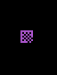To load a file, replace the active filename and write the name of the .chr file you wish to import, and click enter. To import the file click on the checkered square on the bottom right of the window.
If switching between projects, you can have multiple instances of the Uxn emulator open at various locations. Holding the alt key while clicking on the load-icon, will load the file as a 1bpp sprite sheet.
New file
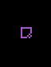To load a blank file, click on the empty square icon on the bottom right of the window.
All changes will be lost, make sure to re-name your file.
Interface
Sprite sheet
The left portion of the canvas is the sprite sheet, where it is possible to draw assets.
Name table editor
The right portion of the canvas is the name table editor. It's a way to preview assets from the sprite sheet.
Blend view
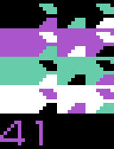In the blend view there are 4 rows of 4 columns displaying the possible color permutations of the selected tile, allowing you to switch between them easily.
If you have a tile with pixel information selected, the blend view will display that tile in different colors. Clicking on one will alter all the tiles on your canvas.
Blend view is useful when you need a tile to display in more than one color in a single project. Take note of the number under the 4 rows once you've found a suitable blending mode. It's possible to select a color mode for your sprite and to preview it directly in the nametable (right portion of canvas).
The two arrows allow you to flip an image horizontally (left arrow) or vertically (up arrow), allowing you to change the orientation of a tile without having to re-draw it. With the pencil tool selected, right click anywhere in the nametable.
Pre view
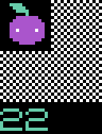Pre view is useful for assembling assets made of multiple sprites.
On a spritesheet all tiles that make up a sprite will need to be lined up from left to right. For someone assembling a character that spans multiple titles, it is easier to locate the position of each piece if they follow each other. The issue with having many tiles lined that way, is that if they form a sprite that spans many tiles, it is difficult to make sense of it. By selecting the number of tiles it is meant to fill the pre-view will combine tiles to make a sprite.
Say your sprite is 16x16(or 2x2 tiles). On the canvas the 4 tiles follow each other horizontally. To visualize them as a full sprite, select the starting tile for that sprite (upper left) with the select tool. Tiles will appear in the pre-view. Navigate to the pre-view menu and select 2x2 tiles. The number below indicates the tile size, 2x2 or 22 for our example.
Color view
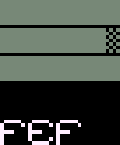The color view permits you to change colors. There are 3 opaque sliders on a checkered background, moving the sliders will change the colors in the canvas.
The number underneath the sliders is the current RGB color code. When making a game, write down this number so you can replicate the color palette in the project.
Zoom view
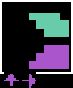When selecting a tile with pixel information, an enlarged version appears in the zoom view. This is an isolated view of your tile that you can use to make quick changes. It is possible to draw while in zoom view, it will alter the version on the canvas.
The up and down arrows will offset the tile to preview an asset that needs to tile perfectly with itself. It's also useful to move a shape up and down by a few pixels without having to re-draw it.
Data view
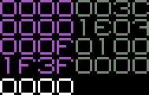The data view is located at the top right corner of the window, if the selected tile is empty it will read 4 rows of 8 zeros with a row of 4 zeros underneath. Data view, as its name suggests, is a way to rapidly preview the data making up each tile.
The numbers at the bottom of the view indicate the position of the cursor on the spritesheet. This is useful to see where sprites start and end in a .chr file.
Uxn uses a base16 counting system, it is a way to compact a series of 8 bits without having to look at 1's and 0's. It is similar to the number system we use everyday to count with (the decimal system) in that it uses the standard 0-9 numbers, but it also incorporates letters: A, B, C, D, E, and F - to indicate values above 9.
| 0 | 0 | 0000 | 4 | 4 | 0100 | 8 | 8 | 1000 | 12 | C | 1100 |
| 1 | 1 | 0001 | 5 | 5 | 0101 | 9 | 9 | 1001 | 13 | D | 1101 |
| 2 | 2 | 0010 | 6 | 6 | 0110 | 10 | A | 1010 | 14 | E | 1110 |
| 3 | 3 | 0011 | 7 | 7 | 0111 | 11 | B | 1011 | 15 | F | 1111 |
The table above shows the letters and numbers used in base-10, base-16, and their corresponding series in binary. It isn't crucial to understand the inner workings of the data view to use Nasu, it is written here in the interest of sharing how things work and what every number or letter represents.
If you fill the canvas with a drawing, the information in the data view will change with letters and numbers. This is your drawing, only now represented in numbers and letters, which in turn represent the pixels in binary.
Color tool
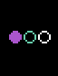At the bottom left, there are 3 colored circles. You can only ever use 4 colors(including background) in a project. Select a circle to change the brush color. Pressing the number key 1 will unselect all circles and pick black, which by default is the background color. Black assigned as a background color doubles as an eraser. Right-click on a pixel in your canvas to 'erase' it, or to blend it with the background color of your project.
Pencil tool
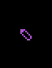The pencil tool is next to the select tool, used to draw pixels on the canvas.
No further explanation is needed :)
Select tool

The 'select' tool is the arrow, located next to the color tool.
This tool can set focus on a specific tile. Choosing a tile with the select tool changes the information in the blend view, pre view, zoom view and data view.
With the select tool, it is possible to copy and paste entire sprites from one place to the other, or from one Nasu instance to another. To do this, select a sprite that spans multiple tiles and press ctrl + c. Navigate to the desired spot on the canvas, with your cursor select the tile width of your sprite and then press ctrl + v. Your sprite will be pasted on the canvas as is. It is also possible to paste the sprite already pre-broken down on a line, to do this, while on the canvas make a horizontal selection exceeding the number of tiles that make up the sprite, and press ctrl + v.
Zoom tool
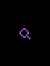For a more detailed view of a drawing, select the magnifying glass.
This view shows outlines of each 8x8 tile, with each drawn pixel appearing as a dot. This tool is useful to make detailed corrrections to a tile. Click on the space bar, or on the magnifying glass again to return to the normal view.
Use arrow keys to move around to make corrections to other tiles.